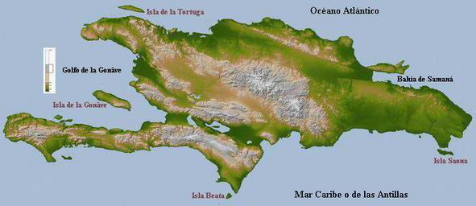

Según la wikipedia:
La Española (en latín: Hispaniola; en criollo haitiano: Ispayola, Henley, Jon (14 de enero de 2010). «Haiti: a long descent to hell». The Guardian. Consultado el 4 de septiembre de 2013.) es una isla del mar Caribe que acoge a dos estados soberanos, la República Dominicana y Haití . Situada entre la isla de Cuba, al oeste, y la de Puerto Rico, al este, es la segunda isla por extensión del archipiélago de las Antillas Mayores. La Española fue el primer asentamiento europeo en el Nuevo Mundo, tras ser descubierta por Cristóbal Colón en su primer viaje en 1492, y desempeñó un papel destacado durante el primer siglo de la presencia española en América.

Española se divide en dos paises: La Republica Dominicana (RD) y Haiti.
volver